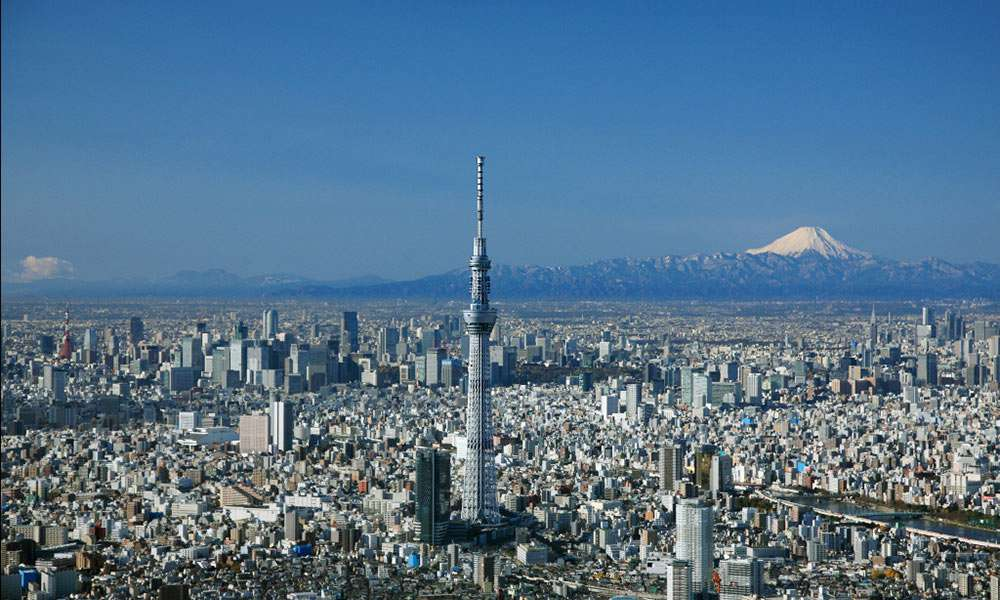

東京スカイツリー
東京スカイツリー（とうきょうスカイツリー、英: TOKYO SKYTREE）は、東京都墨田区押上1-1-2にある電波塔（送信所）であり、東武鉄道及び東武グループのシンボル的存在である。2012年2月29日に完成し、同年5月に電波塔・観光施設として開業した。観光・商業施設やオフィスビルが併設されており、電波塔を含め周辺施設は「東京スカイツリータウン」と呼ばれている。とうきょうスカイツリー駅・押上駅が最寄駅である。 東京スカイツリーについての名称・ロゴマーク・シルエットデザイン・完成予想コンピュータグラフィックスといった知的財産は東武グループの一社である東武タワースカイツリー株式会社等の著作権および商標権により保護されている。このため公式案内では「東京スカイツリー®」と®マークが記載されている。